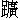

一夜東風，不見柳梢殘雪。御樓煙暖，對鼇山綵結。簫鼓向晚，鳳輦初回宮闕。千門燈火，九衢風月。
繡閣人人，乍嬉游、困又歇。豔妝初試，把珠簾半揭。嬌羞向人，手撚玉梅低說。相逢長是，上元時節。」
這一首詞，名《傳言玉女》，乃胡浩然先生所作。道君皇帝朝，宣和年間，元宵最盛。每年上元正月十四日，車駕幸五嶽觀凝祥池。每常駕出，有紅紗貼金燭籠二百對；元夕加以琉璃玉柱掌扇，快行客各執紅紗珠珞燈籠。至晚還內，駕入燈山，御輦院人員，輦前唱《隨竿媚》來。御輦旋轉一遭，倒行觀燈山，謂之「鵓鴿旋」，又謂「踏五花兒」，則輦官有賞賜矣。駕登宣德樓，遊人奔赴露台下。十五日，駕幸上清宮，至晚還內。上元後一日，進早膳訖，車駕登門捲簾，御座臨軒，宣百姓：先到門下者，得瞻天表。小帽紅袍獨坐，左右侍近，簾外金扇執事之人。須臾下簾，則樂作，縱萬姓遊賞。華燈寶燭，月色光輝，霏霏融融，照耀遠邇。至三鼓，樓上以小紅紗燈緣索而至半，都人皆知車駕還內。當時御制《夾鍾宮．小重山》詞，道：
『羅綺生香嬌豔呈，金蓮開陸海，繞都城。寶輿四望翠峰青。東風急，吹下半天星。
萬井賀昇平。行歌花滿路，月隨人。紗籠一點御燈明。蕭韶遠，高宴在蓬瀛。』
今日說一個官人，從來只在東京看這元宵；誰知時移事變，流寓在燕山看元宵。那燕山元宵卻如何：
雖居北地，也重元宵。未聞鼓樂喧天，只聽胡笳聒耳。家家點起，應無陸地金蓮；處處安排，那得玉梅雪柳。小番鬢邊挑大蒜，岐婆頭上帶生蔥。漢兒誰負一張琴，女們盡敲三棒鼓。
每年燕山市井，如東京製造，到己酉歲方成次第。當年那燕山裝那鼇山，也賞元宵，士大夫、百姓皆得觀看。這個官人，本身是肅王府使臣，在貴妃位掌牋奏；姓楊，雙名思溫，排行第五，呼為楊五官人。因靖康年間，流寓在燕山。猶幸相逢姨夫張二官人，在燕山開客店，遂寓居焉。楊思溫無可活計，每日肆前與人寫文字，得些胡亂度日。忽值元宵，見街上的人皆去看燈，姨夫也來邀思溫看燈，同去消遣旅況。思溫情緒索然，辭姨夫道：「看了東京的元宵，如何看得此間元宵？姨夫自穩便先去，思溫少刻追陪。」張二官人先去了。
楊思溫挨到黃昏，聽得街上喧鬧，靜坐不過，只得也出門來看燕山元宵。但見：
蓮燈燦爛，只疑吹下半天星；士女駢闐，便是列成王母隊。一輪明月嬋娟照，半是京華流寓人。
見街上往來遊人無數。思溫行至昊天寺前，只見真金身鑄五十三參；銅打成旛竿十丈，上有金書「敕賜昊天憫忠禪寺」。思溫入寺看時，佛殿兩廊，盡皆點照。信步行到羅漢堂，乃渾金鑄成五百尊阿羅漢。入這羅漢堂，有一行者，立在佛座前化香油錢，道：「諸位看燈檀越，布施燈油之資，祝延福壽。」思溫聽其語音，類東京人，問行者道：「參頭，仙鄉何處？」行者答言：「某乃大相國寺河沙院行者，今在此間復為行者。請官人坐於凳上，閒話則個。」
思溫坐凳上，正看來往遊人。睹一簇婦人，前遮後擁，入羅漢堂來。內中一個婦人，與思溫四目相盼。思溫睹這婦人打扮，好似東京人。但見：
輕盈體態，秋水精神。四珠環勝內家妝，一字冠成宮裡樣。未改宣和妝束，猶存帝裡風流。
思溫認得是故鄉之人，感慨情懷，悶悶不已，因而困倦，假寐片時。那行者叫得醒來，開眼看時，不見那婦人。楊思溫嗟呀道：「我卻待等他出來，恐有親戚在其間，相認則個，又挫過了。」對行者道：「適來入院婦女何在？」行者道：「婦女們施些錢去了。臨行道：『今夜且歸，明日再來做些功德，追薦親戚則個。』官人莫悶，明日卻來相候不妨。」思溫見說，也施些油錢。與行者相辭了，離羅漢院。遶寺尋遍，忽見僧堂壁上，留題小詞一首，名《浪淘沙》：
『盡日倚危欄，觸目淒然，乘高望處是居延。忍聽樓頭吹畫角，雪滿長川。
荏苒又經年，暗想南園，與民同樂午門前。僧院猶存宣政字，不見鼇山。』
楊思溫看罷留題，情緒不樂。歸來店中，一夜睡不著。巴到天明起來，當日無話得說。
至晚，吩咐姨夫，欲往昊天寺，尋昨夜的婦人。走到大街上，人稠物攘，正是熱鬧。正行之間，忽然起一陣雷聲。思溫恐下雨，驚而欲回。擡頭看時，只見：
銀漢現一輪明月，天街點萬盞華燈。寶燭燒空，香風拂地。
仔細看時，卻見四圍人從，擁著一輪大車，從西而來，車聲動地。跟隨番官，有數十人。但見：
呵殿喧天，儀仗塞路。前面列十五對紅紗照道，燭焰爭輝；兩下擺二十柄畫桿金槍，寶光交際。香車似箭，侍從如云。
車後有侍女數人，其中有一婦女穿紫者，腰佩銀魚，手持淨巾，以帛擁項。思溫於月光之下仔細看時，好似哥哥國信所掌儀韓思厚妻，嫂嫂鄭夫人意娘。這鄭夫人，原是喬貴妃養女，嫁得韓掌儀。與思溫都是同里人，遂結拜為表兄弟，思溫呼意娘為嫂嫂。自後睽離，不復相問。著紫的婦人見思溫，四目相睹，不敢公然招呼。思溫隨從車子，到燕市秦樓住下，車盡入其中。貴人上樓去，番官人從樓下坐。原來秦樓最廣大，便以東京白樊樓一般；樓上有六十個閤兒，下面散鋪七八十副卓凳。當夜賣酒，合堂熱鬧。
楊思溫等那貴家入酒肆，去秦樓裡面坐地，叫過賣至前。那人見了思溫便拜。思溫扶起道：「休拜。」打一認時，卻是東京白樊樓過賣陳三兒。思溫甚喜，就教三兒坐。三兒再三不敢。思溫道：「彼此都是京師人，就是他鄉遇故知，同坐不妨。」唱喏了方坐。思溫取出五兩銀子與過賣，吩咐：「收了銀子，好好供奉數品葷素酒菜上來。」與三兒一面吃酒說話。三兒道：「自丁未年至此，拘在金吾宅作奴僕。後來鼎建秦樓，為思舊日樊樓過賣，乃日納買工錢八十，故在此做過賣。幸與官人會面。」正說話間，忽聽得一派樂聲。思溫道：「何處動樂？」三兒道：「便是適來貴人，上樓飲酒的韓國夫人宅眷。」思溫問韓國夫人事體。三兒道：「這夫人極是照顧人，常常夜間將帶宅眷來此飲酒，和養娘各坐。三兒常上樓供過伏事，常得夫人賞賜錢鈔使用。」思溫又問三兒：「適間路邊遇韓國夫人，車後宅眷叢裡，有一婦人，似我嫂嫂鄭夫人，不知是否？」三兒道：「即要復官人，三兒每上樓供過眾宅眷時，常見夫人，又恐不是，不敢廝認。」思溫遂告三兒道：「我有件事相煩你：你如今上樓供過韓國夫人宅眷時，就尋鄭夫人。做我傳語道：『我在樓下專候夫人下來，問哥哥詳細。』」三兒應命上樓去，思溫就座上等。一時，只見三兒下樓，以指住下唇。思溫曉得京師人市語，恁地乃了事也。思溫問：「事如何？」三兒道：「上樓得見鄭夫人，說道：『五官人在下面等夫人下來，問哥哥消息。』夫人聽得，便垂淚道：『叔叔原來也在這裡。傳與五官人，少刻便下樓，自與叔叔說話。』」思溫謝了三兒，打發酒錢，乃出秦樓門前，佇立懸望。
不多時，只見祗候人從入去。少刻，番官人從簇擁一輛車子出來。思溫候車子過，後面宅眷也出來，見紫衣佩銀魚、項纏羅帕婦女，便是嫂嫂。思溫進前，共嫂嫂敘禮畢，遂問道：「嫂嫂因何與哥哥相別在此？」鄭夫人搵淚道：「妾自靖康之冬，與兄賃舟下淮楚，將至盱眙，不幸箭穿駕手，刀中梢公。妾有樂昌破鏡之憂，汝兄被縲絏纏身之苦，為虜所掠。其酋撒八太尉相逼，我義不受辱，為其執虜至燕山。撒八太尉恨妾不從，見妾骨瘦如柴，遂鬻妾身於祖氏之家。後知是娼戶。自思是品官妻，命官女，生如蘇小卿何榮？死如孟姜女何辱？暗抽裙帶，自縊梁間。被人得知，將妾救了。撒八太尉妻韓夫人聞而憐我，亟令救命，留我隨侍。項上瘡痕，至今未愈，是故項纏羅帕。倉皇別良人，不知安往。新得良人音耗：當時更衣遁走，今在金陵，復還舊職，至今四載，未忍重婚。妾燃香煉頂，問卜求神，望金陵之有路，脫生計以無門。今從韓國夫人至此游宴，既為奴僕之軀，不敢久語。叔叔叮嚀，驀遇江南人，倩教傳個音信。」楊思溫欲待再問其詳，俄有番官，手持八稜抽攘，向思溫道：「我家奴婢，更夜之間，怎敢引誘？」拏起抽攘，迎臉便打。思溫一見來打，連忙急走。那番官腳

行遲，趕不上。走得脫，一身冷汗。慌忙歸到姨夫客店。張二官見思溫走回喘吁吁地，問道：「做甚麼直恁慌張？」思溫將前事一一告訴。張二官見說，嗟呀不已。安排三杯與思溫嚯索。思溫想起哥哥韓忠翊，嫂嫂鄭夫人，那裡吃得酒下。愁悶中過了元宵，又是三月。張二官向思溫道：「我出去兩三日即歸，你與我照管店裡則個。」思溫問：「出去何幹？」張二官人道：「今兩國通和，奉使至維揚，買些貨物便回。」楊思溫見姨夫張二官出去，獨自無聊，晝長春困，散步大街至秦樓。入樓閒望一晌，乃見一過賣至前唱喏，便叫：「楊五官！」思溫看時，好生面熟，卻又不是陳三。是誰？過賣道：「男女東京寓仙酒樓過賣小王。前時陳三兒被左金吾叫去，不令出來。」思溫不見三兒在秦樓，心下越悶，胡亂買些點心吃。便問小王道：「前次上元夜韓國夫人來此飲酒，不知你識韓國夫人住處麼？」小王道：「男女也曾問他府中來，道是天王寺後。」說猶未了，思溫擡頭一看，壁上留題，墨跡未乾。仔細讀之，題道：「昌黎韓思厚舟發金陵，過黃天蕩。因感亡妻鄭氏，船中作相弔之詞，名《御階行》：
『合和朱粉千餘兩，捻一個，觀音樣。大都卻似兩三分，少付玲瓏五臟。等待黃昏，尋好夢底，終夜空勞攘。
香魂媚魄知何往？料只在，船兒上。無言倚定小門兒，獨對滔滔雪浪。若將愁淚，還做水算，幾個黃天蕩？』
楊思溫讀罷，駭然魂不附體。「題筆正是哥哥韓思厚，恁地是嫂嫂沒了。我正月十五日秦樓親見，共我說話，道在韓國夫人宅為侍妾。今卻沒了？這事難明。」驚疑未決，遂問小王道：「墨跡未乾，題筆人何在？」小王道：「不知。如今兩國通和，奉使至此，在本道館驛安歇。適來四五人來此飲酒，遂寫於此。」說話的，錯說了！使命入國，豈有出來閒走買酒吃之理？按《夷堅志》載，那時法禁未立，奉使官聽從與外人往來。當日是三月十五日，楊思溫問：「本道館在何處？」小王道：「在城南。」思溫還了酒錢，下樓，急去本道館，尋韓思厚。到得館道，只見蘇、許二掌儀在館門前閒看。二個都是舊日相識，認得思溫，近前唱喏，還禮畢。問道：「楊兄何來？」思溫道：「特來尋哥哥韓掌儀。」二人道：「在裡面會文字，容入去喚他出來。」二人遂入去，叫韓掌儀出到館前。思溫一見韓掌儀，連忙下拜，一悲一喜，便是『他鄉遇契友，燕山逢故人』。思溫問思厚：「嫂嫂安樂？」思厚聽得說，兩行淚下，告訴道：「自靖康之冬，與汝嫂顧船，將下淮楚。路至盱眙，不幸箭穿篙手，刀中梢公。爾嫂嫂有樂昌破鏡之憂，兄被縲絏纏身之苦。我被虜執於野寨，夜至三鼓，以苦告得脫。然亦不知爾嫂嫂存亡。後有僕人周義，伏在草中，見爾嫂被虜撒八太尉所逼，爾嫂義不受辱，以刀自刎而死。我後奔走行在，復還舊職。」思溫問道：「此事還是哥哥目擊否？」思厚道：「此事周義親自報我。」思溫道：「只恐不死。今歲元宵，我親見嫂嫂同韓國夫人出遊，宴於秦樓。思溫使陳三兒上樓寄信，下樓與思溫相見。所說事體，前面與哥哥一同。也說道哥哥復還舊職，到今四載，未忍重婚。」思厚聽得說，理會不下。思溫道：「容易決其死生。何不同往天王寺後韓國夫人宅前打聽，問個明白？」思厚道：「也說得是。」乃入館中，吩咐同事：「帶當直隨後。」二個同行。
倏忽之間，走至天王寺後。一路上悄無人跡，只見一所空宅，門生蛛網，戶積塵埃，荒草盈堦，綠苔滿地，鎖著大門。楊思溫道：「多是後門。」沿牆且行數十步，牆邊只有一家，見一個老兒在裡面打絲線。向前唱喏道：「老丈，借問韓國夫人宅那裡進去？」老兒稟性躁暴，舉止粗俗，全不采人。二人再四問他，只推不知。頃間，忽有一老嫗提著飯籃，口中喃喃埋冤，怨暢那大伯。二人遂與婆婆唱喏，婆子還個萬福，語音類東京人。二人問：「韓國夫人宅在那裡？」婆子正待說，大伯又埋怨多口。婆子不管大伯，向二人道：「媳婦是東京人，大伯是山東抝蠻，老媳婦沒興，嫁得此畜生，全不曉事！逐日送些茶飯，嫌好道歹，且是得人憎。便做到官人問句話，就說何妨？」那大伯口中又嘵嘵的不住。婆子不管他，向二人道：「韓國夫人宅，前面鎖著空宅便是。」二人吃一驚，問：「韓夫人何在？」婆子道：「韓夫人前年化去了。他家搬移別處，韓夫人埋在花園內。官人不信時，媳婦同去看一看，好麼？」大伯又說：「莫得入去，官府知道，引惹事端，帶累我。」婆子不采，同二人便行。路上就問：「韓國夫人宅內有鄭義娘，今在否？」婆子便道；「官人不是國信所韓掌儀，名思厚？這官人不是楊五官，名思溫麼？」二人大驚，問：「婆婆如何得知？」婆子道：「媳婦見鄭夫人說。」思厚又問：「婆婆如何認得？拙妻今在甚處？」婆婆道：「二年前時，有撒八太尉，曾於此宅安下。其妻韓國夫人崔氏，仁慈恤物，極不可得。常喚媳婦入宅，見夫人說，撒八太尉自盱眙掠得一婦人，姓鄭，小字義娘，甚為太尉所喜。義娘誓不受辱，自刎而死。夫人憫其貞節，與火化，收骨盛匣。以後韓夫人死，因隨葬在此園內。雖死者，與活人無異。媳婦入園內去，常見鄭夫人出來。初時也有些怕，夫人道：『婆婆莫怕，不來損害婆婆，有些衷曲間告訴則個。』夫人說道是京師人，姓鄭，名義娘。幼年進入喬貴妃位做養女，後出嫁忠翊郎韓思厚。有結義叔叔楊五官，名思溫。一一與老媳婦說。又說盱眙事跡，『丈夫見在金陵為官，我為他守節而亡。』尋常陰雨時，我多入園中，與夫人相見閒話。官人要問仔細，見了自知。」
三人走到適來鎖著的大宅，婆婆踰牆而入，二人隨後也入裡面去。只見打鬼淨淨的一座敗落花園。三人行步間，滿地殘英芳草；尋訪婦人，全沒蹤跡。正面三間大堂，堂上有個屏風，上面山水，乃郭熙所作。思厚正看之間，忽然見壁上有數行字。思厚細看字體柔弱，全似鄭義娘夫人所作。看了大喜道：「五弟，嫂嫂只在此間。」思溫問：「如何見得？」思厚打一看，看其筆跡，乃一詞，詞名《好事近》：
『往事與誰論？無語暗彈淚血。何處最堪憐？腸斷黃昏時節。
倚樓凝望又徘徊，誰解此情切？何計可同歸雁？趁江南春色。」
後寫道：『季春望後一日作。』二人讀罷，道：「嫂嫂只今日寫來，可煞驚人！」行至側首，有一座樓，二人共婆婆扶著欄杆登樓。至樓上，又有巨屏一座，字體如前，寫著《憶良人》一篇，歌曰：
『孤雲落日春雲低，良人窅窅羈天涯。東風蝴蝶相交飛，對景令人益慘淒。盡日望郎郎不至，素質香肌轉憔悴。滿眼韶華似酒濃，花落庭前鳥聲碎。孤幃悄悄夜迢迢，漏盡燈殘香已銷。鞦韆院落久停戲，雙懸彩索空搖搖。眉兮眉兮春黛蹙，淚兮淚兮常滿掬。無言獨步上危樓，倚遍欄杆十二曲。荏苒流光疾似梭，滔滔逝水無迴波。良人一去不復返，紅顏欲老將如何？』
韓思厚讀罷，以手拊壁而言：「我妻不幸為人驅虜。」正看之間，忽聽楊思溫急道：「嫂嫂來也！」思厚回頭看時，見一婦人，項擁香羅而來。思溫仔細認時，正是秦樓見的嫂嫂。那婆婆也道：「夫人來了！」三人大驚，急走下樓來尋。早轉身入後堂左廊下，趨入一閣子內去。二人驚懼。婆婆道：「既已到此，可同去閣子裡看一看。」
婆子引二人到閣前，只見關著閣子門，門上有牌面寫道：「韓國夫人影堂。」婆子推開槅子，三人入閣子中看時，卻是安排供養著一個牌位，上寫著：「亡室韓國夫人之位。」側邊有一軸畫，是義娘也；牌位上寫著：『侍妾鄭義娘之位。』面前供卓，塵埃尺滿。韓思厚看見影神上衣服容貌，與思溫元夜所見的無二，韓思厚淚下如雨。婆子道：「夫人骨匣，只在卓下。夫人常提起教媳婦看，是個黑漆匣，有兩個鍮石環兒。每遍提起，夫人須哭一番，和我道：『我與丈夫守節喪身，死而無怨。』」思厚聽得說，乃懇婆子同揭起磚，取骨匣歸葬金陵，當得厚謝。婆婆道：「不妨。」三人同掇起供卓，揭起花磚，去掇匣子。用力掇之，不能得起，越掇越牢。思溫急止二人：「莫掇，莫掇！哥哥，須曉得嫂嫂通靈。今既取去，也要成禮。且出此間，備些祭儀，作文以白嫂嫂，取之方可。」韓思厚道：「也說得是。」三人再踰牆而去。到打線婆婆家，令僕人張謹買下酒脯、香燭之物，就婆婆家做祭文。等至天明，一同婆婆、僕人搬挈祭物，踰牆而入。在韓國夫人影堂內，鋪排供養訖。
等至三更前後，香殘燭盡，杯盤零落，星宿渡河流之候，酌酒奠饗。三奠已畢，思厚當靈筵下披讀祭文。讀罷，流淚如傾，把祭文同紙錢燒化。忽然起一陣狂風，這風吹得燭有光以無光，燈欲滅而不滅，三人渾身汗顫。風過處，聽得一陣哭聲。風定燭明，三人看時，燭光之下，見一婦女，媚臉如花，香肌似玉，項纏羅帕，步蹙金蓮，斂袂向前，道聲：「叔叔萬福。」二人大驚，敘禮。韓思厚執手向前，哽咽流淚。哭罷，鄭夫人向著思厚道：「昨者盱眙之事，我夫今已明矣。只今元夜秦樓，與叔叔相逢，不得盡訴衷曲。當時妾若貪生，必須玷辱我夫。幸而全君清德若瑾瑜，棄妾性命如土芥，至有今日生死之隔，終天之恨。」說罷，又哭一次。婆婆勸道：「休哭，且理會遷骨之事。」鄭夫人收哭而坐，三人進些飲饌，夫人略饗些氣味。思溫問：「元夜秦樓下相逢，嫂嫂為韓國夫人宅眷，車後許多人，是人是鬼？」鄭夫人道：「太平之世，人鬼相分；今日之世，人鬼相雜。當時隨車，皆非人也。」思厚道：「賢妻為吾守節而亡，我當終身不娶，以報賢妻之德。今願遷賢妻之香骨，共歸金陵可乎？」夫人不從道：「婆婆與叔叔在此，聽奴說。今蒙賢夫念妾孤魂在此，豈不願歸從夫？然須得常常看我，庶幾此情不隔冥漠。倘若再娶，必不我顧，則不如不去為強。」三人再三力勸，夫人只是不肯，向思溫道：「叔叔豈不知你哥哥心性，我在生之時，他風流性格，能以拘管；今妾已作故人，若隨他去，憐新棄舊，必然之理。」思溫再勸道：「嫂嫂聽思溫說，哥哥今來不比往日，感嫂嫂貞節而亡，決不再娶。今哥哥來取，安忍不隨回去？願從思溫之言。」夫人向二人道：「謝叔叔如此苦苦相勸。若我夫果不昧心，願以一言為誓，即當從命。」說罷，思厚以酒瀝地為誓：「若負前言，在路盜賊殺戮，在水巨浪覆舟。」夫人急止思厚：「且住，且住！不必如此發誓。我夫既不重娶，願叔叔為證見。」道罷，忽地又起一陣香風，香過，遂不見了夫人。三人大驚訝，復添上燈燭，去供卓底下揭起花磚，款款掇起匣子，全不費力。收拾踰牆而出，至打縧婆婆家。次晚，以白銀三兩，謝了婆婆；又以黃金十兩，贈與思溫，思溫再辭方受。思厚別了思溫，同僕人張謹，帶骨匣歸本驛。俟月餘，方得回書，令奉使歸。思溫將酒餞別，再三叮嚀：「哥哥無忘嫂嫂之言。」
思厚同一行人從，負夫人骨匣，出燕山豐宜門，取路而歸，月餘，方抵盱眙。思厚到驛中歇泊，忽一人唱喏便拜。思厚看時，乃是舊僕人周義，今來謝天地，在此做個驛子。遂引思厚入房，只見掛一幅影神，畫著個婦人；又有牌位兒上寫著：「亡主母鄭夫人之位。」思厚怪而問之。周義道：「夫人貞節，為官人而死。周義親見，怎的不供奉夫人？」思厚因把燕山韓夫人宅中事，從頭說與周義；取出匣子，教周義看了。周義展拜啼哭。思厚是夜與周義抵足而臥。
至次日天曉，周義與思厚道：「舊日二十餘口，今則惟影是伴，情願伏事官人去金陵。」思厚從其請，將帶周義歸金陵。思厚至本所，將回文呈納。周義隨著思厚，卜地於燕山之側，備禮埋葬夫人骨匣畢。思厚不勝悲感，三日一詣墳所饗祭，至暮方歸，遂令周義守墳塋。
忽一日，蘇掌儀、許掌儀說：「金陵土星觀觀主劉金壇，雖是個女道士，德行清高。何不同往觀中，做些功德，追薦令政？」思厚依從。選日，同蘇、許二人到土星觀來訪劉金壇時，你說怎生打扔？但見：
頂天青巾，執象牙簡，穿白羅袍，著翡翠履。不施朱粉，分明是梅萼凝霜；淡佇精神，彷彿如蓮花出水。儀容絕世，標緻非凡。
思厚一見，神魂散亂，目睜口呆。敘禮畢，金壇吩咐一面安排做九幽醮，且請眾官到裡面看靈芝。三人同入去，過二清殿、翠華軒，從八卦壇房內，轉入絳綃館，原來靈芝在絳綃館。眾人去看靈芝，惟思厚獨入金壇房內閒看。但見明窗淨几，鋪陳玩物。書案上文房四寶，壓紙界方下露出些紙，信手取看時，是一幅詞，上寫著《浣溪沙》：
『標緻清高不染塵，星冠雲氅紫霞裙，門掩斜陽無一事，撫瑤琴。
虛館幽花偏惹恨，小窗閒月最消魂，此際得教還俗去，謝天尊』
韓思厚初觀金壇之貌，已動私情；後觀紙上之詞，尤增愛念。乃作一詞，名《西江月》，詞道：
『玉貌何勞朱粉，江梅豈類群花？終朝隱几論黃芽，不顧花前月下。
冠上星簪北斗，杖頭經掛《南華》。不知何日到仙家，曾許彩鸞同跨。』
拍手高唱此詞。金壇變色焦躁說：「是何道理？欺我孤弱，亂我觀宇！」命人取轎來，「我自去見恩官，與你理會。」蘇、許二人再四勸住，金壇不允。韓思厚就懷中取出金壇所作之詞，教眾人看，說：「觀主不必焦躁，這個詞兒，是誰做的？」諕得金壇安身無地，把怒色都變做笑容，安排筵席，請眾官共坐，飲酒作樂，都不管做功德追薦之事。酒闌，二人各有其情，甚相愛慕，盡醉而散。
這劉金壇原是東京人，丈夫是樞密院馮六承旨，因靖康年間同妻劉氏雇舟避難，來金陵。去淮水上，馮六承旨被冷箭落水身亡。其妻劉氏發願，就土星觀出家，追薦丈夫。朝野知名，差做觀主。此後韓思厚時常往來劉金壇處。
忽一日，蘇、許二掌儀醵金備禮，在觀中請劉金壇、韓思厚。酒至數巡，蘇、許二人把盞，勸思厚與金壇道：「哥哥既與金壇相愛，乃是宿世因緣。今外議藉藉，不當穩便。何不還了俗，用禮通媒，娶為嫂嫂，豈不美哉！」思厚、金壇從其言。金壇以錢買人告還俗；思厚選日下定，娶歸成親。一個也不追薦丈夫，一個也不看顧墳墓。倚窗攜手，惆悵論心。
成親數日，看墳周義不見韓官人來上墳，自詣宅前探聽消息。見當直在門前，問道：「官人因甚這幾日不來墳上？」當直道：「官人娶了土星觀劉金壇做了孺人，無工夫上墳。」周義是北人，性直，聽說，氣忿忿地。恰好撞見思厚出來，周義唱喏畢，便著言語道：「官人，你好負義！鄭夫人為你守節喪身，你怎下得別娶孺人？」一頭罵，一頭哭夫人。韓思厚與劉金壇新婚，恐不好看，喝教當直們打出周義。周義悶悶不已，先歸墳所。當日是清明，周義去夫人墳前哭著告訴許多。是夜，睡至三更，鄭夫人叫周義道：「你韓掌儀在那裡住？」周義把思厚辜恩負義娶劉氏事，一一告訴他一番：「如今在三十六丈街住，夫人自去尋他理會。」夫人道：「我去尋他。」周義夢中驚覺，一身冷汗。
且說那思厚共劉氏新婚歡愛，月下置酒賞玩。正飲酒間，只見劉氏柳眉剔豎，星眼圓睜，以手捽住思厚不放，道：「你忒煞虧我，還我命來！」身是劉氏，語音是鄭夫人的聲氣。諕得思厚無計可施，道：「告賢妻饒恕。」那裡肯放。正擺撥不下，忽報蘇、許二掌儀步月而來望思厚，見劉氏捽住思厚不放。二人解脫得手，思厚急走出。與蘇、許二人商議，請笪橋鐵索觀朱法官來救治。即時遣張謹請到朱法官。法官見了劉氏道：「此冤抑不可治之，只好勸諭。」劉氏自用手打摑其口與臉上，哭著告訴法官以燕山蹤跡。又道：「望法官慈悲做主。」朱法官再三勸道：「當做功德追薦超生。如堅執不聽，冒犯天。」劉氏見說，哭謝法官：「奴奴且退。」少刻，劉氏方甦。法官書符與劉氏吃，又貼符房門上。法官辭去，當夜無事。
次日，思厚賫香紙詣笪橋謝法官。方坐下，家中人來報說：「孺人又中惡。」思厚再告法官，同往家中救治。法官云：「若要除根好時，須將燕山墳發掘，取其骨匣，棄於長江，方可無事。」思厚只得依從所說，募土工人等，同往掘開墳墓，取出鄭夫人骨匣，到揚子江邊，拋放水中。自此，劉氏安然。恁地時，負心的無天理報應，豈有此理！
思厚負了鄭義娘，劉金壇負了馮六承旨。至紹興十一年，車駕幸錢塘，官民百姓皆從。思厚亦挈家離金陵，到於鎮江。思厚因想金山勝景，乃賃舟同妻劉氏江岸下船。行到江心，忽聽得舟人唱《好事近》詞，道是：
『往事與誰論？無語暗彈淚血。何處最堪憐？腸斷黃昏時節。
倚門凝望又徘徊，誰解此情切？何計可同歸雁？趁江南春色。』
思厚審聽所歌之詞，乃燕山韓國夫人鄭氏義娘題屏風者，大驚，遂問梢公：「此曲得自何人？」梢公答曰：「近有使命入國至燕山，滿城皆唱此詞。乃一打線婆婆自韓國夫人宅中屏上錄出來的。說是江南一官人渾家，姓鄭名義娘，因貞節而死，後來鄭夫人丈夫私挈其骨歸江南。此詞傳播中外。」思厚聽得說，如萬刃攢心，眼中淚下。須臾之間，忽見江中風浪俱生，煙濤並起，異魚出沒，怪獸掀波。見水上一人波心湧出，頂萬字巾，把手揪劉氏雲鬢，擲入水中。侍妾高聲叫喊：「孺人落水！」急喚思厚教救，那裡救得！俄頃，又見一婦人，項纏羅帕，雙眼圓睜，以手捽思厚，拽入波心而死。舟人欲救不能，遂惆悵而歸。歎古今負義人皆如此，乃傳之於人。詩曰：
一負馮君罹水厄，一虧鄭氏喪深淵。宛如孝女尋屍死，不若三閭為主愆。
本章完!